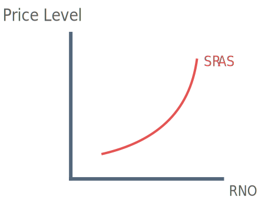
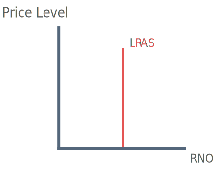
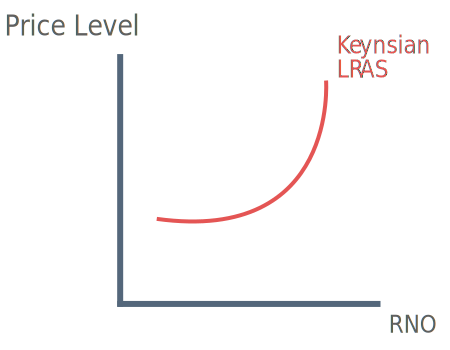

What is Aggregate Supply?
Aggregate supply measures the volume of all goods and services prduced each year.
There are two types of aggregate supply curve:
Short-run Aggregate Supply (SRAS)
Long-run Aggregate Supply (LRAS)
Short-run Aggregate Supply

The SRAS curve slopes upwards, this is because we assume firms produce at a profit-maximising level of output (MR = MC). If firms increase output beyond this point, marginal costs (MC) rise, leading to a fall in pofit.
Profit-maximising firms must therefore increase marginal revenue by raising prices. Without higher prices firms will not increase output.
Factors that shift the SRAS
Shifts of the SRAS are often caused by changes in business costs, these are costs that effect businesses on a day-to-day basis:
Wages
Commodity Prices
Government subsidies
Import prices
Tax
Long-run Aggregate Supply

The LRAS curve is assumed to be vertical as it depicts the economy producing at full capacity. In this sitution any increase in aggregate demand will cause an increase in the price level.
Factors that shift the LRAS
Outward shifts of the LRAS are caused by factors that increase the productive potential of the economy:
Technological Innovation
Investment in Human Capital
Increase in the size of work force e.g. migration
Encouraging entrepreneurialism
Better management of resources e.g. division of labour
Keynsian LRAS

The Keynsian LRAS curve is the product of Keynes's explanation of the Great Depression of the 1930s. It is used to argue that a depressed economy can settle into an under-full employment equilibrium in the long-run.
This is shown by the horizontal section of the LRAS. New Keynsians argue that without government intervention the economy could remain in permanant demand-deficiency.
Market force would fail to adjust unless the government is able to shift the AD curve. Due to the existance of huge amounts of spare-capacity in a depressed economy, the government could achieve growth without an increase in the price level.